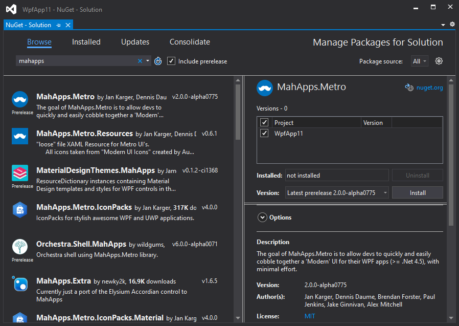
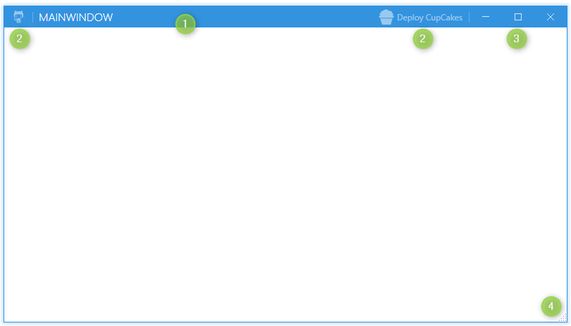

This guide will introduce you to how MahApps.Metro works and how to incorporate it into your app.
Installation
You can install MahApps.Metro via the NuGet UI or with the Package Manager Console.

With the Package Manager Console:
PM> Install-Package MahApps.Metro
If you want to use a pre-release packages of MahApps.Metro, you need to enable Include Prerelease in the NuGet UI:

With the Package Manager Console:
PM> Install-Package MahApps.Metro -Pre
MahApps build-in styles and themes
All resources of MahApp.Metro are located within separate resource dictionaries. To adopt the MahApps.Metro theme, you will need to add the resource dictionaries to your App.xaml.
<Application x:Class="SampleApp"
xmlns="http://schemas.microsoft.com/winfx/2006/xaml/presentation"
xmlns:x="http://schemas.microsoft.com/winfx/2006/xaml"
StartupUri="MainWindow.xaml">
<Application.Resources>
<ResourceDictionary>
<ResourceDictionary.MergedDictionaries>
<!-- MahApps.Metro resource dictionaries. Make sure that all file names are Case Sensitive! -->
<ResourceDictionary Source="pack://application:,,,/MahApps.Metro;component/Styles/Controls.xaml" />
<ResourceDictionary Source="pack://application:,,,/MahApps.Metro;component/Styles/Fonts.xaml" />
<!-- Theme setting -->
<ResourceDictionary Source="pack://application:,,,/MahApps.Metro;component/Styles/Themes/Light.Blue.xaml" />
</ResourceDictionary.MergedDictionaries>
</ResourceDictionary>
</Application.Resources>
</Application>
Note
Make sure that all resource file names are Case Sensitive!
Using the MetroWindow
To start with the full MahApps styling and full window support you need to change your normal Window to our MetroWindow.
- Open up your main window, normally named
MainWindow.xaml - Add the namespace attribute inside the opening Window tag
orxmlns:mah="clr-namespace:MahApps.Metro.Controls;assembly=MahApps.Metro"xmlns:mah="http://metro.mahapps.com/winfx/xaml/controls" - Change the
<Window ... </Window>tag to<mah:MetroWindow ... </mah:MetroWindow>
Now you should have something like this (don't copy and paste this directly)
<mah:MetroWindow x:Class="SampleApp.MainWindow"
xmlns="http://schemas.microsoft.com/winfx/2006/xaml/presentation"
xmlns:x="http://schemas.microsoft.com/winfx/2006/xaml"
xmlns:d="http://schemas.microsoft.com/expression/blend/2008"
xmlns:mah="clr-namespace:MahApps.Metro.Controls;assembly=MahApps.Metro"
xmlns:mc="http://schemas.openxmlformats.org/markup-compatibility/2006"
Title="MainWindow"
Width="800"
Height="450"
WindowStartupLocation="CenterScreen"
mc:Ignorable="d">
<Grid>
<!-- Your content -->
</Grid>
</mah:MetroWindow>
You'll also need to modify the code behind of the window file so that the base class matches the MetroWindow class of the XAML file.
using MahApps.Metro.Controls;
namespace SampleApp
{
/// <summary>
/// Interaction logic for MainWindow.xaml
/// </summary>
public partial class MainWindow : MetroWindow
{
public MainWindow()
{
InitializeComponent();
}
}
}
But in most cases you can just drop the base class (because this is a partial class the XAML should take care of this).
namespace SampleApp
{
/// <summary>
/// Interaction logic for MainWindow.xaml
/// </summary>
public partial class MainWindow
{
public MainWindow()
{
InitializeComponent();
}
}
}
The end result will look something like this:

Extend the MetroWindow
The MetroWindow can be extend and changed with some extra features.
The visibility of the
TitleBarcan be changed with the propertyShowTitleBarUse the
LeftWindowCommandsandRightWindowCommandsto add controls to the title bar. Button, ToggleButton, SplitButton and DropDownButton will use a default style. For all other controls you must create your own styles.The
WindowButtonCommandsare also changable, so you can create your own Min, Max/Restore and Close button styles.
The visibility of the Min and Max / Restore buttons are also effected by theResizeMode. IfResizeMode="NoResize"the buttons are collapsed. IfResizeMode="CanMinimize"the Max / Restore button is collapsed.Show a resize grip on the right bottom corner for better resizing.

Note
Make sure to include the MahApps.Metro.IconPacks to get the cupcake icon.
<mah:MetroWindow x:Class="SampleApp.MainWindow"
xmlns="http://schemas.microsoft.com/winfx/2006/xaml/presentation"
xmlns:x="http://schemas.microsoft.com/winfx/2006/xaml"
xmlns:d="http://schemas.microsoft.com/expression/blend/2008"
xmlns:iconPacks="http://metro.mahapps.com/winfx/xaml/iconpacks"
xmlns:mah="clr-namespace:MahApps.Metro.Controls;assembly=MahApps.Metro"
xmlns:mc="http://schemas.openxmlformats.org/markup-compatibility/2006"
Title="MainWindow"
Width="800"
Height="450"
GlowBrush="{DynamicResource MahApps.Brushes.Accent}"
ResizeMode="CanResizeWithGrip"
WindowStartupLocation="CenterScreen"
mc:Ignorable="d">
<mah:MetroWindow.LeftWindowCommands>
<mah:WindowCommands>
<Button Click="LaunchGitHubSite" ToolTip="Open up the GitHub site">
<iconPacks:PackIconModern Width="22"
Height="22"
Kind="SocialGithubOctocat" />
</Button>
</mah:WindowCommands>
</mah:MetroWindow.LeftWindowCommands>
<mah:MetroWindow.RightWindowCommands>
<mah:WindowCommands>
<Button Click="DeployCupCakes" Content="Deploy CupCakes">
<Button.ContentTemplate>
<DataTemplate>
<StackPanel Orientation="Horizontal">
<iconPacks:PackIconModern Width="22"
Height="22"
VerticalAlignment="Center"
Kind="FoodCupcake" />
<TextBlock Margin="4 0 0 0"
VerticalAlignment="Center"
Text="{Binding}" />
</StackPanel>
</DataTemplate>
</Button.ContentTemplate>
</Button>
</mah:WindowCommands>
</mah:MetroWindow.RightWindowCommands>
<Grid>
<!-- Your content -->
</Grid>
</mah:MetroWindow>
using System.Windows;
using MahApps.Metro.Controls;
namespace SampleApp
{
/// <summary>
/// Interaction logic for MainWindow.xaml
/// </summary>
public partial class MainWindow : MetroWindow
{
public MainWindow()
{
InitializeComponent();
}
private void LaunchGitHubSite(object sender, RoutedEventArgs e)
{
// Launch the GitHub site...
}
private void DeployCupCakes(object sender, RoutedEventArgs e)
{
// deploy some CupCakes...
}
}
}
You can also show an Icon on the title bar by setting the Icon property or by using the IconTemplate property.

What's Next?
For extended documentation, take a look at the Styles and Controls section.